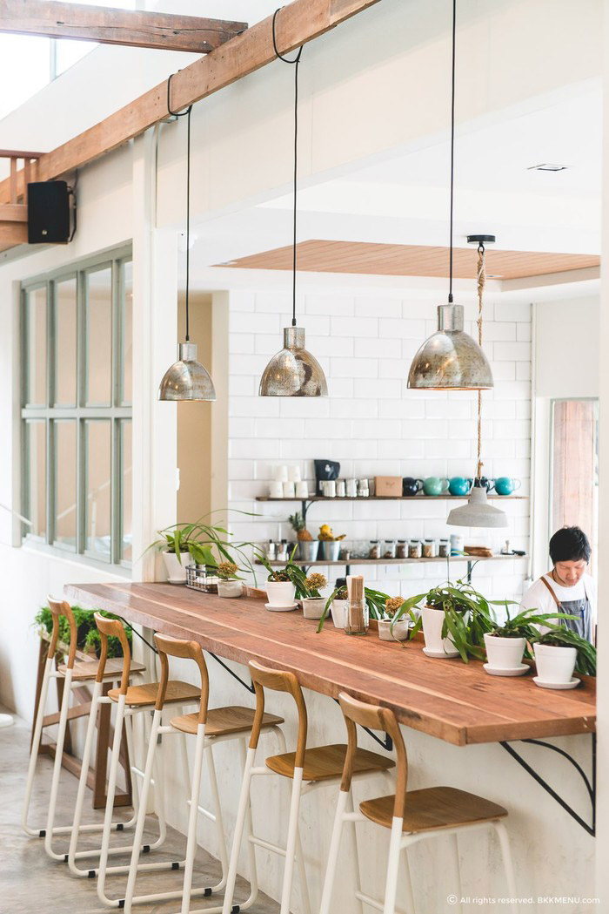
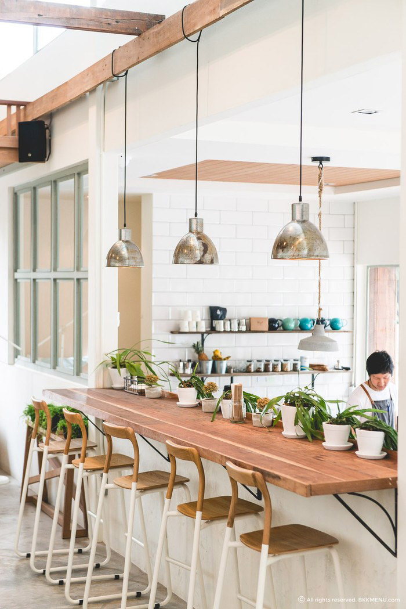

DUZU公司成立于1867年。19世纪60年代，从事药剂师工作的瑞士籍人亨利·内斯特尔（Henri Nestle）为不能享用母乳的婴儿配置了婴儿食品，发明了一育
儿用乳制品，即把果糖和营养剂加入奶粉中，是当时很优秀的育儿食品，但产量很少，它能起到代替母乳的作用，可以挽救不能食用母乳及其他代用品的婴儿，于
是一传十、十传百，逐渐被一些妈妈、助产士以及医生们所知晓。 Henri Nestle内斯特尔顺势在1867年创立了育儿奶粉公司， 以他的名字Nestle为其产品的品牌
名称，并以咖啡图案作为商标图形。
1905年，雀巢育儿奶粉公司与美国人办的另一食品公司合并，取名雀巢英瑞炼乳公司；1949年为另一家瑞士公司购进，改为现名雀巢食品公司。2015 年，B
lue Bottle 在东京开设了第一家位于日本的门店，仅一个月后第二家门店也随之开张。截至到 2016 年，Blue Bottle 在美国和日本的门店一共开了 29 家店，虽然
这一数字并不算多，但它的热度正在持续上升，Blue Bottle 计划2017年在美国和日本的门店数量将达到 55 家。


 
